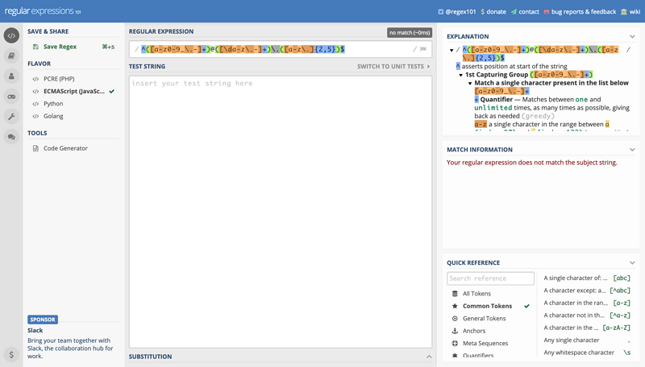
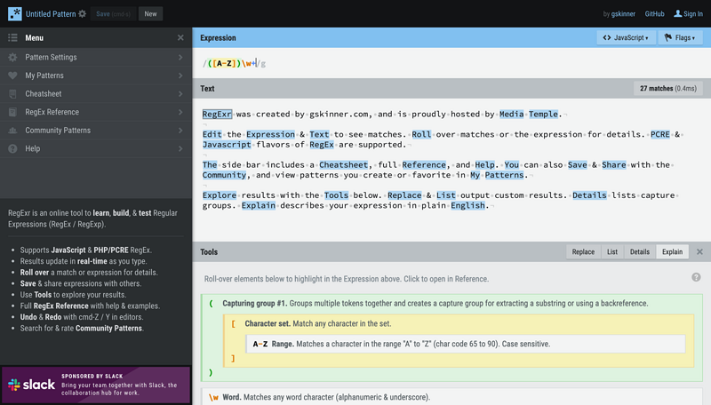
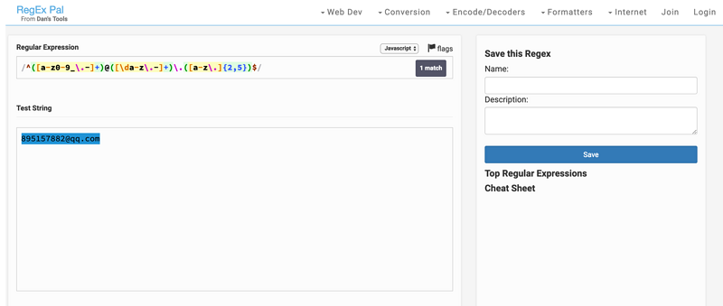
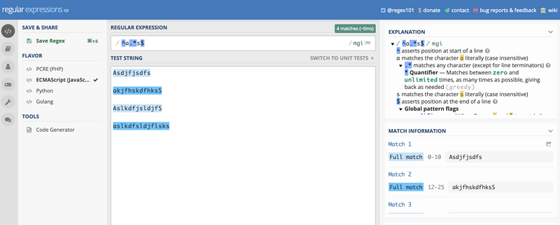

摘要： 正则表达式入门教程。
Fundebug经授权转载，版权归原作者所有。
正则表达式是很多程序员，甚至是一些有了多年经验的开发者薄弱的一项技能。大家都很多时候都会觉得正则表达式难记、难学、难用，但不可否认的是正则表达式是一项很重要的技能，所有我将学习和使用正则表达式时的关键点整理如下，供大家参考。
不同语言中的正则表达式写法有少许差异，本文将使用 Javascript 中的语法。
正则表达式（Regular Expression 或 Regex），是用于定义某种特定搜索模式的字符组合。正则表达式可用于匹配、查找和替换文本中的字符，进行输入数据的验证，查找英文单词的拼写错误等。
下面列出了几款优秀的在线调试工具，如果你想创建或者调试正则表达式可能会需要。个人比较偏好Regex101，regex101 支持在正则表达式的不同 flavor 之间切换、解释你的正则表达式、显示匹配信息、提供常用语法参考等功能，非常强大。



在 Javascript 中，一个正则表达式以 / 开头和结尾，所以简单至 /hello regexp/ 就是一个正则表达式。
Flags 写在结束的/之后，可以影响整个正则表达式的匹配行为。常见的 flags 有：
g：全局匹配（global）；正则表达式默认只会返回第一个匹配结果，使用标志符g则可以返回所有匹配i：忽略大小写（case-insensitive）；在匹配时忽略英文字母的大小写m：多行匹配（multiline）；将开始和结束字符（^和$）视为在多行上工作，即分别匹配每一行（由 \n 或 \r 分割）的开始和结束，而不只是只匹配整个输入字符串的最开始和最末尾处Flags 可以组合使用，如：

用于匹配字符集合中的任意一个字符，常见的字符集有：
[xyz]：匹配 "x"或"y"``"z"[^xyz]：补集，匹配除 "x" "y" "z"的其他字符[a-z]：匹配从 "a" 到 "z" 的任意字符[^a-n]：补集，匹配除 "a" 到 "n" 的其他字符[A-Z]：匹配从 "A" 到 "Z" 的任意字符[0-9]：匹配从 "0" 到 "9" 的任意数字比如匹配所有的字母和数字可以写成：/[a-zA-Z0-9]/ 或者 /[a-z0-9]/i。
在实际使用中，我们常常需要匹配同一类型的字符多次，比如匹配 11 位的手机号，我们不可能将 [0-9] 写 11 遍，此时我们可以使用 Quantifiers 来实现重复匹配。
{n}：匹配 n 次{n,m}：匹配 n-m 次{n,}：匹配 >=n 次?：匹配 0 || 1 次*：匹配 >=0 次，等价于 {0,}+：匹配 >=1 次，等价于 {1,}在正则表达式中有一些具有特殊含义的字母，被称为元字符，简言之，元字符就是描述字符的字符，它用于对字符表达式的内容、转换及各种操作信息进行描述。
常见的元字符有：
\d：匹配任意数字，等价于 [0-9]\D：匹配任意非数字字符；\d 的补集\w：匹配任意基本拉丁字母表中的字母和数字，以及下划线；等价于 [A-Za-z0-9_]\W：匹配任意非基本拉丁字母表中的字母和数字，以及下划线；\w 的补集\s：匹配一个空白符，包括空格、制表符、换页符、换行符和其他 Unicode 空格\S：匹配一个非空白符；\s的补集\b：匹配一个零宽单词边界，如一个字母与一个空格之间；例如，/\bno/ 匹配 "at noon" 中的 "no"，/ly\b/ 匹配 "possibly yesterday." 中的 "ly"\B：匹配一个零宽非单词边界，如两个字母之间或两个空格之间；例如，/\Bon/ 匹配 "at noon" 中的 "on"，/ye\B/ 匹配 "possibly yesterday." 中的 "ye"\t：匹配一个水平制表符（tab)\n：匹配一个换行符（newline)\r：匹配一个回车符（carriage return)正则中存在一些特殊字符，它们不会按照字面意思进行匹配，而有特殊的意义，比如前文讲过用于量词的?、*、+。其他常见的特殊字符有：
\：转义字符，可以将普通字符转成特殊字符。比如 \w；也可以将特殊字符转成字面意思，比如 \+ 匹配 "+".：匹配任意单个字符，但是换行符除外：\n, \r, \u2028 或 \u2029；在字符集中（[.]），无特殊含义，即表示 '.' 的字面意思|：替换字符（alternate character），匹配 | 前或后的表达式。比如需要同时匹配 "bear" 和 "pear"，可以使用 /(b|p)ear/ 或者 /bear|pear/；但是不能用 /b|pear/，该表达式只能匹配 "b" 和 "pear"^：匹配输入的开始。比如，/^A/ 不匹配 "an Apple" 中的 "A"，但匹配 "An apple" 中的 "A"$：匹配输入的结尾。比如，/t$/ 不匹配 "eater" 中的 "t"，但匹配 "eat" 中的 "t"。^ 和 $ 在表单验证时常需要使用，因为需要验证从开始到结尾的一个完整输入，而不是匹配输入中的某一段(xyz)：捕获分组（Capturing Group），匹配并捕获匹配项；例如，/(foo)/ 匹配且捕获 "foo bar." 中的 "foo"。被匹配的子字符串可以在结果数组的元素 [1], ..., [n] 中找到，或在被定义的 RegExp 对象的属性 $1, ..., $9 中找到(?:xyz)：非捕获分组（Non-capturing Group），匹配但不会捕获匹配项；匹配项不能再次被访问到\n：n 是一个正整数，表示反向引用（back reference），指向正则表达式中第 n 个括号（从左开始数）中匹配的子字符串；例如，/apple(,)\sorange\1/ 匹配 "apple, orange, cherry, peach." 中的 "apple,orange,"x(?=y)：仅匹配被y跟随的x；例如，/bruce(?=wayne)/，如果"bruce"后面跟着wayne，则匹配之。/bruce(?=wayne|banner)/ ，如果"bruce"后面跟着"wayne"或者banner，则匹配之。但是，"wayne" 和 "banner" 都不会在匹配结果中出现x(?!y)：仅匹配不被y跟随的x；例如，/\d+(?!\.)/ 只会匹配不被 "." 跟随的数字。/\d+(?!\.)/.exec('3.141')` 匹配 `"141"`，而不是 `"3.141"最后，推荐大家使用Fundebug，一款很好用的 BUG 监控工具~
上面罗列出了这么多正则表达式的语法和规则，可以在一定程度上帮助我们分析和理解一段正则表达式的作用，但是如何将这些规则组合并创造出有特定作用的表达式还需要我们自己多加练习，下面举几个例子来说明运用这些规则。
我们先从比较简单的匹配手机号码开始。目前国内的手机号码是1(3/4/5/7/8)开头的 11 位数字，因此手机号码的正则可以分解为以下几部分：
1 开头：/^1/3、4、5、7、8中的一个：/[34578]/ 或 /(3|4|5|7|8)//\d{9}$/组合起来即为 /^1[34578]\d{9}$/ 或 /^1(3|4|5|7|8)\d{9}$/，因为使用捕获括号存在性能损失，所以推荐使用第一种写法。
标准的电子邮件组成为 <yourname>@<domain>.<extension><optional-extension>，
每部分的格式标准为（进行了相应的简化，主要为展示如何书写正则）：
"."开头，后面跟任意英文字母（a-z/A-Z），长度 2-8，可选每部分的正则表达式为：
/[a-z\d._-]+//[a-z\d-]+//[a-z]{2,8}//(\.[a-z]{2,8})?/组合起来形成最后的正则表达式：/^([a-z\d._-]+)@([a-z\d-]+)\.([a-z]{2,8})(\.[a-z]{2,8})?$/；为了增加可读性可以将每部分用"()"包起来，并不要忘记起始和结束符 ^$。
今天关于正则表达式的普及就先到这儿，希望对大家以后写正则能有一点帮助。关于本文中没有涉及到的知识可以参考以下链接：
推荐大家使用Fundebug，一款很好用的 BUG 监控工具~
Fundebug专注于JavaScript、微信小程序、微信小游戏、支付宝小程序、React Native、Node.js和Java线上应用实时BUG监控。 自从2016年双十一正式上线，Fundebug累计处理了10亿+错误事件，付费客户有阳光保险、核桃编程、荔枝FM、掌门1对1、微脉、青团社等众多品牌企业。欢迎大家免费试用！